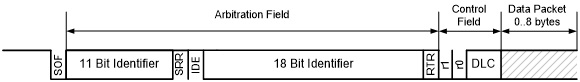

Introduction to CAN
Controller Area Network (CAN) is a standard that was initially created in 1981 by Bosch, and has since been used for factory automation and communication networks in cars, to name just a few uses. Today there are hundreds of millions of nodes in daily use.
As a result, there are a number of relatively inexpensive ICs available that fully implement the CAN specifications out of the box. By using CAN controllers and drivers, you do not have to write highly time-sensitive code. Instead, you can focus on implementing support for the messages in the application layers, which is a "relatively" simple task compared with implementing a transport layer.
CAN Messages
CAN transmits messages, called frames on the bus. Every other device (node) on the bus can (and must) listen to all of the traffic on the bus. One of the interesting and useful aspects of CAN is how it handle collisions, which is through arbitration.
CAN frames, in the form used by OpenLCB, consist of a 29-bit header followed by zero or more bytes of data. This is using the extended frame format, also know as CAN 2.0 B.

Arbitration
Arbitration is the process used to ensure that only one node will be transmitting data at one time, thus eliminating collisions and providing extremely reliable communications. It also allows nearly 100% utilization of the bandwidth for the bus.
The arbitration phase relies on drivers only driving the bus low, and never driving the bus high. If two nodes attempt to put different bit values on the bus at the same time, the 0 will always win. Here is a chart that shows how this works:
| Node 1 | Node 2 | Bus Value |
|---|---|---|
| 0 | 0 | 0 |
| 0 | 1 | 0 |
| 1 | 0 | 0 |
| 1 | 1 | 0 |
Arbitration uses the 29-bit header value as a priority value to gain access to the bus, where lower values have higher priority. This mechanism provides very high utilization of the bus’ bandwidth because one node will always win a collision and keep transmitting. In contrast, Ethernet uses a more complex scheme where nodes have to back off, wait a random period, then attempt to transmit again, thus wasting bandwidth.
For arbitration to work sucessfully, each message sent by a node needs to use a unique 29-bit ID. The details for this are handled by the OpenLCB specifications, and are different for different types of messages.